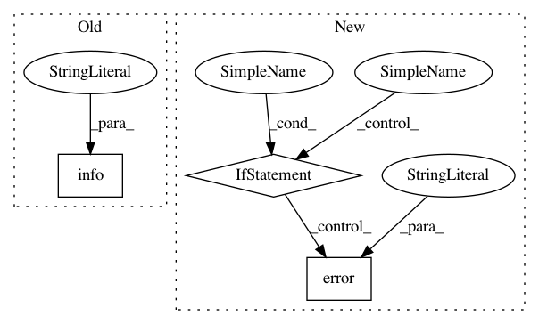

a62a840a9227010662bc0317d8d97752c1d45366,perfzero/lib/cloud_manager.py,,create,#Any#Any#Any#Any#Any#Any#Any#Any#,99
Before Change
cmd = "gcloud compute ssh {} --project={} --zone={} --command="git clone {}"".format(
instance_name, project, zone, "https://github.com/tensorflow/benchmarks.git") // pylint: disable=line-too-long
logging.info("Run the command below to checkout PerfZero code on the computing instance:\n%s\n", cmd) // pylint: disable=line-too-long
cmd = "gcloud compute ssh {} --project={} --zone={} -- -L 6006:127.0.0.1:6006".format(instance_name, project, zone) // pylint: disable=line-too-long
logging.info("Run the command below to ssh to the instance together with port forwarding for tensorboard:\n%s\n", cmd) // pylint: disable=line-too-long
After Change
ssh_error = None
except Exception as error: // pylint: disable=broad-except
ssh_error = error
if ssh_remaining_retries:
logging.info("Cannot ssh to the computing instance. "
"Try again after 5 seconds")
time.sleep(5)
else:
logging.error("Cannot ssh to the computing instance after "
"60 seconds due to error:\n%s", str(ssh_error))
if ssh_error:
logging.info("Run the commands below manually after ssh into the computing "
"instance:\n"
"git clone https://github.com/tensorflow/benchmarks.git\n"
In pattern: SUPERPATTERN
Frequency: 3
Non-data size: 3
Instances
Project Name: tensorflow/benchmarks
Commit Name: a62a840a9227010662bc0317d8d97752c1d45366
Time: 2019-03-13
Author: donglin@google.com
File Name: perfzero/lib/cloud_manager.py
Class Name:
Method Name: create
Project Name: AlexsLemonade/refinebio
Commit Name: 741a954562bf99d23078b54eeb617f601a81f2af
Time: 2017-12-11
Author: kurt.wheeler91@gmail.com
File Name: workers/data_refinery_workers/processors/management/commands/queue_processor.py
Class Name: Command
Method Name: handle
Project Name: deepfakes/faceswap
Commit Name: 29cfdaad460b155e44b093b11afeaaeac9dd645f
Time: 2021-03-21
Author: 36920800+torzdf@users.noreply.github.com
File Name: scripts/train.py
Class Name: Train
Method Name: _get_images